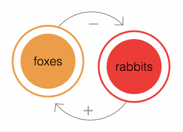
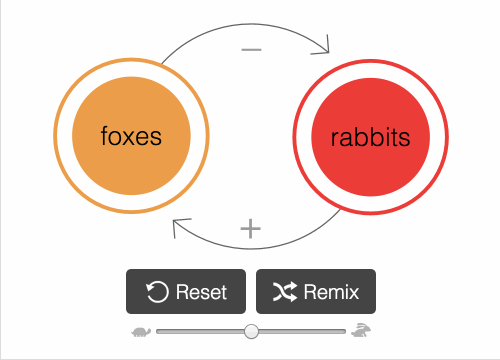

在一个充满了越来越复杂的技术、社会学、生态学、政治和经济系统的世界里......一个制作互动模拟的工具可能不会有太大的帮助。但它肯定值得尝试。

用模拟的方式玩一玩
这是一种古老的、历史悠久的学习方式：瞎折腾，看看会发生什么。玩模拟，提出 "如果 "的问题，对系统的工作原理有一个直观的认识。
通过绘图编程
原始代码太难接触了。另外，拖放也太主流了。但是有了LOOPY，你可以通过简单的画圈和箭头来建立系统模型，简单的就像婴儿。

可以融入他人的模型(remix)
想在你朋友的模型基础上更进一步吗？或者挑战你的敌人的模型？LOOPY可以让你与模拟进行对话 你可以从用系统思考，到用系统说话。
快 速 上 手
或者自己画一个 →
就像胶布一样，你可以用LOOPY做各种事情。
无论你如何选择使用LOOPY，希望它不仅能给你提供软件工具，还能给你提供
心理工具
来理解我们周围世界的复杂系统。外面的世界很混乱。
TRY OUT LOOPY →
祝你玩得愉快! <3